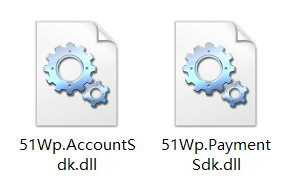
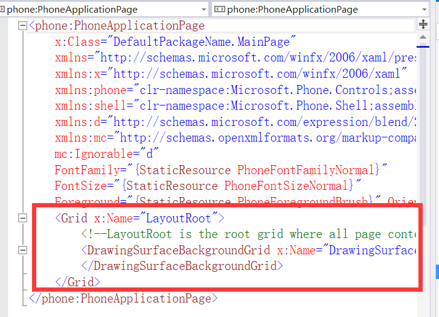
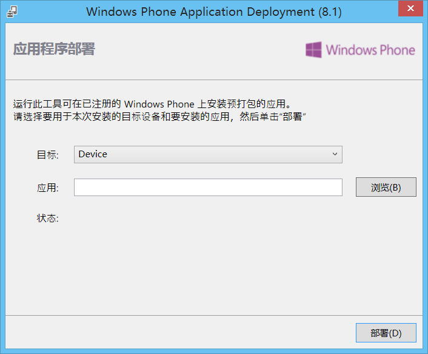
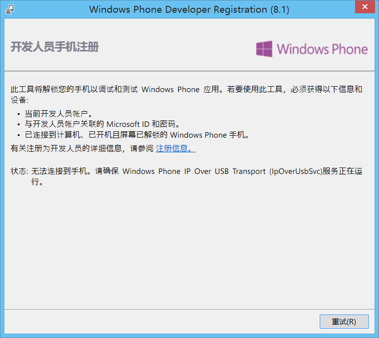

1. 环境准备
Win8x64以上PC一台,内存4G以上,需要支持CPU虚拟化
VS2013以上,我使用的VS2015RC
爱应用SDK
2. 下载解压爱应用SDK,找到对应平台的支付和登录SDK
登录:51Wp.AccountSdk.dll
支付:51Wp.PaymentSdk.dll

3. 编写SDK管理脚本WpPlatform.cs
1 | using UnityEngine; |
4. 编写游戏内逻辑脚本,将登录结果和支付结果的回调注册进去。
5. 构建WP工程,使用Win8以上的Win电脑VS2013以上打开工程,添加对SDK的引用。
6. 打开WMAppManifest.xml
. 应用程序UI—配置iCO、应用名称、图块资源
. 功能—分别添加ID_CAP_IDENTITY_USER、ID_CAP_MEDIALIB_PHOTO、ID_CAP_WEBBROWSERCOMPONENT三个功能
. 打包—此时并不修改AppID,待应用上传后商店会再次签名生成AppID,之后再复制商店的AppID填入
7. 打开MainPage.xaml添加LayerRoot
1 | <Grid x:Name="LayoutRoot"> |

8. 打开AppXaml.cs在App的构造函数结尾添加SDK初始化方法
1 | //初始化新峰支付 |
9. 打开MainPage.xaml.cs,添加SDK业务逻辑
1 | //SDK 配置 |
10. 接入手机直接Run就行了,前提是手机为开发机。
如需要部署XAP文件,则使用VS2015配套的Windows Phone Application Deployment 8.1选择安装包,点击部署即可.

如果手机未开启开发者模式,打开VS2015配套的
Windows Phone Developer Registration 8.1输入开发者账号，点击解锁等待一下即可。
需要注意的是,即使是开发者也只能在开发机上同时部署10个开发者应用(使用爱应用安装的破解软件也属于开发者应用),超过卸载多余的软件即可继续部署。
07-02添加新爱应用统计
添加对XAPCNStatistics.dll的引用
在App.xaml.cs的Application_Launching方法中添加如下方法,初始化爱应用统计1
2
3
4
5private void Application_Launching(object sender, LaunchingEventArgs e)
{
XAPCNStatistics.InitStatistics init = new XAPCNStatistics.InitStatistics();
init.Action(SDKConfig.GameId);
}